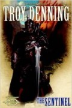

The Sentinel
Écrit par Troy Denning, publié en Avril 2014.
AVERTISSEMENT
Cette page révèle certaines informations qui pourraient gâcher la lecture du roman. Si vous pensez lire ce livre dans un futur proche, mieux vaut ne pas parcourir ce résumé !
1486. Le Cormyr est en déclin, Myth Drannor est assiégé, le Netheril a prit d'assaut Arabel et marche sur Suzail. Les habitants de Marsember sont évacués car les ombres de Wheloon se sont évadées et arriveront bientôt en ville. Kleef Kenric est un gradé de la garde de cette cité qui vénère Heaume, un dieu disparu depuis plus de cent ans. Avec l'un de ses hommes, il se met en chasse d'un espion shadovar, pour finalement en trouver des dizaines à la poursuite d'une jolie femme rousse. Sur un pont de la ville, il sera aidé dans un combat contre ces créatures par Lady Arietta Seasilver, une adoratrice de Siamorphe, la déesse de la noblesse. A 24 ans, la jeune fille ne partage pas la décision de ses riches et nobles parents de fuir la ville.
Joelle Emmelime, la femme rousse, Élue de la déesse de la beauté Sunie, et Malik, un petit homme Élu de Cyric mais qui se fait passer pour un adepte de Myrkul, le dieu des morts, sont pourchassés par Yder Tanthul, l'un des douze princes de Pénombre, car ils sont en possession d'un objet volé dans la forteresse orc de Big Bone Deep, dans les Rocterres [Stonelands]. Dans sa tentative de récupération du bien convoité, Yder tue le père d'Arietta et s'empare de la mère de celle-ci sur le bateau de la famille du duc Seasilver. En ville, une fois les présentations faites et les explications données, Kleef, Arietta, les deux étrangers, ainsi que quelques soldats du duc et des gardes de la ville, embarquent sur le bateau du gnome Falrinn [petit clin d'oeil au roman précédent, The Reaver] afin de tenter de délivrer la duchesse. Durant le voyage, Joelle en profite pour expliquer à Kleef ce qu'il se passe.
Abeir et Toril se séparent de nouveau. Les fragments de terre [earthmotes] tombent, la Magepeste disparaît, la magie redevient comme avant, la mer des Étoiles Déchues a retrouvé son niveau antérieur. Faerûn est en guerre un peu partout, les mortels n'étant que les armes des dieux qui luttent entre eux pour préparer le nouveau monde. La mission de Joelle est d'emmener l'Oeil de Gruumsh dans un temple de Grumbar, un primordial seigneur de la terre, dans l'Outrefaille [Underchasm], pour une histoire entre celui-ci, Gruumsh, le dieu des orcs, et Luthic, la déesse des cavernes et compagne de Gruumsh, avec la finalité de faire échec à un plan de Shar. Car au milieu de ce triangle amoureux plus ou moins divin la déesse des ténèbres essaye de faire chanter Grumbar afin qu'il s'en aille sur Abeir et ainsi lui permettre d’accroître son pouvoir sur Toril comme jamais auparavant. Yder a bien entendu pour but de faire échouer la mission de la jolie femme rousse et ainsi s'assurer que le plan de Shar s'accomplisse.
C'est plus Yder qui retrouve les poursuivants que le contraire mais, par un astucieux stratagème, le groupe réussit à faire échouer la galère du prince shadovar et à faire quitter le navire à la plupart de ses hommes. Kleef et Arietta en profitent pour libérer les rameurs et la mère de la jeune fille. Mais des cris se font entendre sur la bateau du gnome où sont restés Joelle et Malik. Ils retournent alors en arrière sur leur petite barque, pendant que la galère prend le chemin de Westgate, et arrivent juste à temps pour voir un énorme serpent détruire l'embarcation de leurs compagnons. Ils parviennent toutefois à sauver les deux étrangers, ainsi que Falrinn. Le reste de l'équipage a disparu, noyé.
Ce qui reste de la troupe débarque alors au Turmish, près d'Alaghôn. Là, Falrinn se sépare d'eux, et les quatre autres se dirigent vers Arrabar en passant par Xorhun, après s'être joint à une caravane. Mais les shadovars ne sont plus les seuls sur leur piste. Des orcs bien décidés à retrouver l'Oeil ont également retrouvé leurs traces, guidé par Gruumsh. Après avoir mené plusieurs raids contre le convoi, repoussés à chaque fois par les magiciens qui protègent la caravane, les orcs attaquent de nuit le campement dans une ruine en bordure de la forêt de Chondalwood, accompagnés cette fois des shadovars. Durant le combat, Malik tente d'asassiner Arietta et les quatre protagonistes se retrouvent dans la forêt. C'est à ce moment que des satyres leurs enjoignent de les suivre et les guident à travers la forêt jusqu'à une rivière qui les mènera jusqu'à l'Outrefaille, tout en les assurant que ni les orcs ni les shadovars ne pourront les retrouver jusque là. Cyric apparaît alors à Malik et, après avoir enchanté sa dague, le dieu lui annonce qu'il devra tuer Kleef, en plus de Joelle, une fois la quête terminée.
Après cinq jours de navigation sur un radeau de fortune, le groupe ressort de Chondalwood et se retrouve en bordure de l'Outrefaille. Mais alors qu'ils rejoignent la terre ferme, ils s’aperçoivent que les orcs sont de nouveau sur leurs traces, et les shadovars ne doivent pas être loin. Pris en tenaille entre leurs deux ennemis, les quatre héros parviennent à monter leurs adversaires les uns contre les autres, et à s'enfuir pour finalement arriver face au château du magicien Sadrach, dans les catacombes duquel se trouve le temple de Grumbar. Après une fugace apparition de Heaume face à Kleef, qui lui confirmera qu'il est bien un Élu de ce dieu, Yder et ses derniers hommes de main essayent une ultime fois de s'interposer, en vain. Le prince de Pénombre y trouvera même une mort définitive au milieu des morts-vivants du château, alors que les orcs arrivent de nouveau.
Sadrach se charge des orcs, et une fois dans le temple, Malik offre l'Oeil à Grumbar. Ne reste plus qu'à effectuer un sacrifice "par amour" pour activer la magie de Sunie et en terminer avec la mission. Kleef se propose mais Malik sort sa dague et tente de s'attaquer à Arietta. Joelle s'interpose et reçoit le coup fatal à la place de la jeune noble. Grumbar s'empare de l'oeil et les trois survivants s'enfuient du temple. Le petit homme tentera une troisième fois d'en terminer avec Arietta. Réussira t'il enfin ? Pendant ce temps, l'Outrefaille se remplit de terre et se referme.